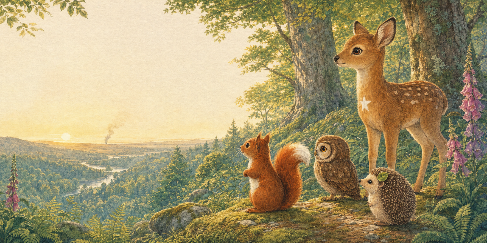
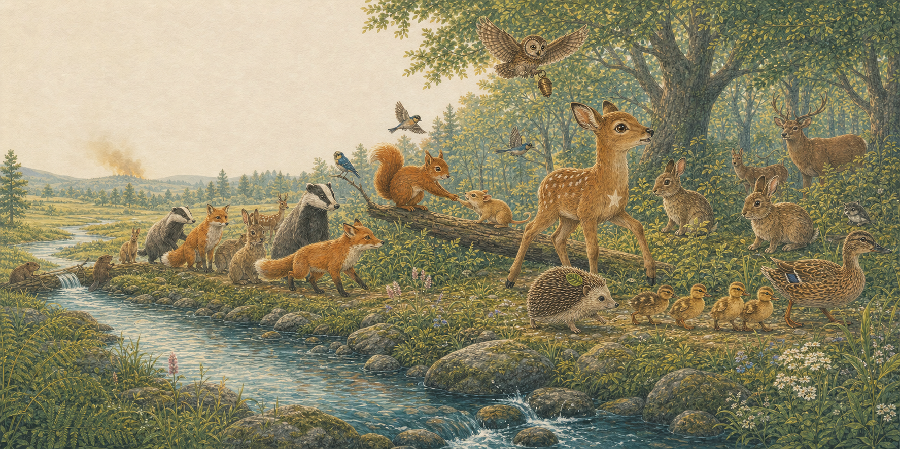
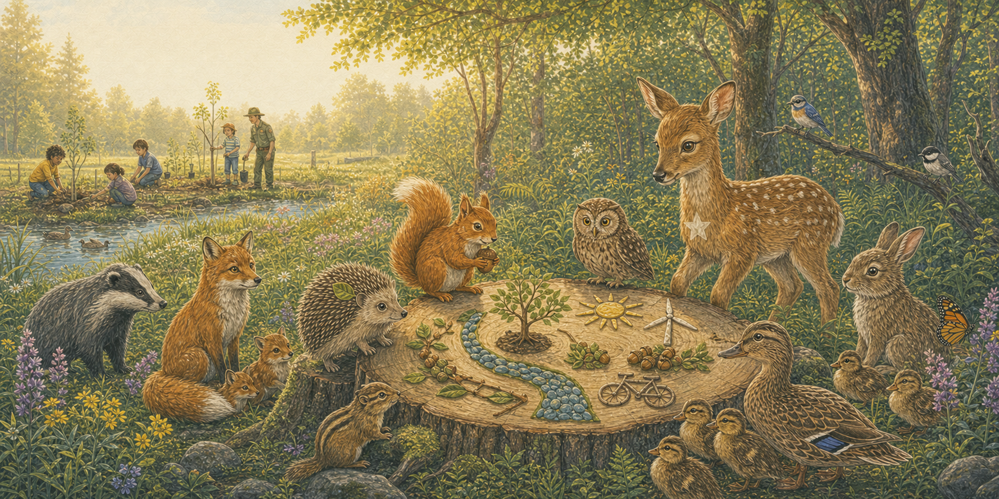

Page one
A thin grey ribbon
Dawn light on the high ridge.
One bright morning, Mira Squirrel saw a thin grey ribbon climbing above the faraway hills.
“Smoke,” whispered Otis Owl. Fern Deer listened. Pip Hedgehog felt the ground grow warm beneath his tiny paws.

Page two
Ring the acorn bell
The alarm above the rushing stream.
Otis flew high and rang the old acorn bell. Mira hurried along the branches. Fern called to the families below, and Pip found the cool path beside the stream.
“Stay together,” they said. “Water and open ground are this way.”

Page three
Every paw, wing and hoof
Downstream, all together.
Along the sparkling stream, everyone helped. Mira reached a paw to a little dormouse. Pip marched beside the ducklings. Otis watched the sky, while Fern led the gentle procession.
Even the beavers guided water into the thirsty woodland edge. No one was left behind.

Page four
The meadow held them all
Safe in the green meadow.
At last, in a green meadow beside the stream, the animals found one another. The sky cleared. The fire was safely contained far away.
They counted every nestling, kit and cub—then listened to the rain patter softly on the leaves.

Page five
A plan for cooler days
The council of the forest.
“Hot, dry days make fires fiercer,” said Otis. So the friends called a forest council.
Together they would protect streams, grow native trees and ask people to care for the Earth: use clean energy, travel kindly, and speak up for every living thing.